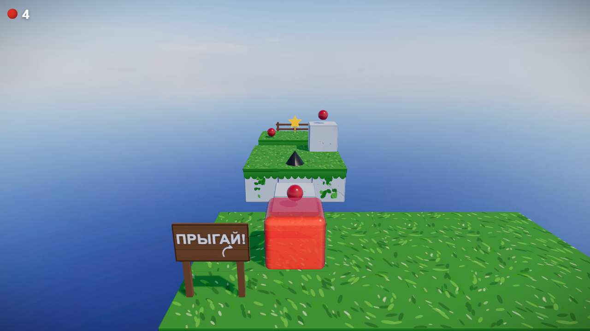

От серых коробок до желе: как за несколько дней менялась картинка в моей игре
docs/devlog/part-1/ и скажите — пересоберу страницу.Я делаю браузерный 3D-платформер на Three.js и Rapier. Начиналось всё, как обычно начинается, — с серых коробок на пустом фоне. Сейчас это красный желейный куб на каменных плитах, парящих в облаках.
Я снимал скриншоты на каждом этапе. Ниже — вся дорога, по шагам: что именно добавлялось, что от этого менялось на экране и где было больно.
Шаг 1. Геометрия и ничего больше
docs/devlog/part-1/ → 02-step1Первое, что появляется в любом 3D-проекте: сцена, камера, набор боксов и куб, который ими управляют. Ни текстур, ни теней, ни материалов сложнее MeshStandardMaterial серого цвета.
На этом этапе смотреть не на что, зато проверяется главное: уровень грузится из JSON, куб стоит там, где написано, камера едет за ним. Уровень описан просто:
{
"name": "level-01",
"spawn": { "x": 0, "y": 3, "z": 0 },
"tiles": [
{ "type": "stone", "x": -1, "y": 0, "z": -1 },
{ "type": "stone", "x": 0, "y": 0, "z": -1 }
]
}Тут же вылезло первое неочевидное: следящая камера должна сглаживаться, иначе от неё укачивает. Жёстко привязанная к кубу камера повторяет каждое дрожание физического тела, и картинка мелко трясётся.
Шаг 2. Физика: куб падает и прыгает
docs/devlog/part-1/ → 02-step2Подключается Rapier, куб получает скруглённый коллайдер, плиты — статические боксы. Появляется прыжок и падение в пропасть.
Визуально почти ничего не изменилось — те же серые коробки. Зато поменялось ощущение: до этого шага был просмотрщик уровней, после — игра.
Шаг 3. Правила: масса, капли, шипы, финиш
docs/devlog/part-1/ → 02-step3Здесь появляется то, ради чего игра существует: масса как единственный ресурс. Капли добавляют массу, шипы срезают, финиш считает звёзды. И первый настоящий уровень вместо тестовой площадки.
Картинка всё ещё серая, а вот интерфейс уже есть — счётчик массы в углу. Это, кстати, единственный элемент HUD в игре: здоровья, ключей и очков нет, всё это и есть масса.
Шаг 4. Первые текстуры — процедурные
docs/devlog/part-1/ → 02-step4Момент, когда игра впервые перестаёт выглядеть как прототип. Камень, трава, небо и облака — всё сгенерировано кодом, без единого файла-картинки.
Почему процедурно, а не готовыми ассетами: на этом этапе я ещё не знал, какой именно камень нужен, и подбирать текстуру было бы гаданием. Процедурную можно крутить параметрами прямо в коде.
Важное требование, которое пришло от владельца проекта сразу: соседние блоки не должны выглядеть одинаково. Решается детерминированным хэшем от координат тайла — вариант камня выбирается по позиции, а не случайно. Никакого Math.random в размещении: иначе уровень выглядел бы по-разному при каждой перезагрузке, а скриншот-тесты сломались бы.
Шаг 5. Желе и кинематографичная камера
docs/devlog/part-1/ → 02-step5Куб перестаёт быть кубом. RoundedBoxGeometry вместо параллелепипеда, MeshPhysicalMaterial с clearcoat, squash & stretch при прыжке и приземлении.
Одновременно камера опускается почти до уровня куба и придвигается:
cameraOffset: { x: 0, y: 1.5, z: 3.8 },
cameraLookAhead: { y: 0.35, z: -1.6 },Это не косметика, а смена жанра картинки. С высокой камеры кадр читался как «вид сверху на площадку». С низкой — как узкий каменный коридор, стены которого уходят вверх за край экрана. Одни и те же плиты, разное ощущение.
Шаг 6. Небо, туман, тонмаппинг
docs/devlog/part-1/ → 02-step6Уровни в моей игре парят в воздухе, и до этого шага они парили в пустоте. Появляются настоящая панорама неба, туман, который прячет обрыв уровня, и тонмаппинг, приводящий пересвеченные места в порядок.
Небо здесь работает дважды: как фон и как источник освещения через IBL. Второе неожиданно аукнулось — синее небо стало отражаться в верхней грани красного куба, и она поехала в мадженту. Лечилось снижением интенсивности отражения окружения втрое.
Шаг 7. Свет, контактные тени и AO
docs/devlog/part-1/ → 02-step7Последний на сегодня большой шаг. Мягкий свет, вершинное затемнение на стыках блоков, контактная тень под кубом, SSAO и постобработка.
Именно AO и контактная тень дали то, чего не хватало сильнее всего: куб перестал висеть над плитами. До этого он выглядел приклеенным поверх картинки, а не стоящим на поверхности. Тёмное пятно под ним стоит почти ничего — плоскость с радиальным градиентом, прозрачность которой зависит от высоты над землёй, — а разница огромная.
Полный пайплайн с SSAO включается не всегда: на мобильных и под автоматизацией качество автоматически падает до low, иначе на слабом GPU всё встаёт.
Где сейчас

Здесь я сейчас: красный желейный куб, крупные светлые плиты с травяной крышкой, деревянные таблички-подсказки прямо в мире вместо текстовых попапов.
Что вынес из этой дороги:
Серый этап нужно проходить быстро, но честно. Соблазн начать с красивого велик, но пока не работают правила, красота — это украшение неработающей игры.
Один параметр камеры может изменить больше, чем неделя работы с материалами. Опустить камеру на метр было дешевле любого шейдера и дало больше.
Контактная тень — самый выгодный эффект по соотношению «результат / усилия». Если объект выглядит парящим над поверхностью, скорее всего дело в ней, а не в материалах.
Процедурные текстуры хороши как черновик. Они позволяют не выбирать раньше времени. Но когда стало понятно, какой именно камень нужен, процедурный был заменён на настоящий PBR-набор — и это правильный порядок, а не поражение.
В следующих частях — техническое: почему куб спотыкался на ровном полу, как устроена архитектура, и как отлаживались чёрные тени на желе.
Поиграть можно прямо в браузере: cubanoid.vercel.app